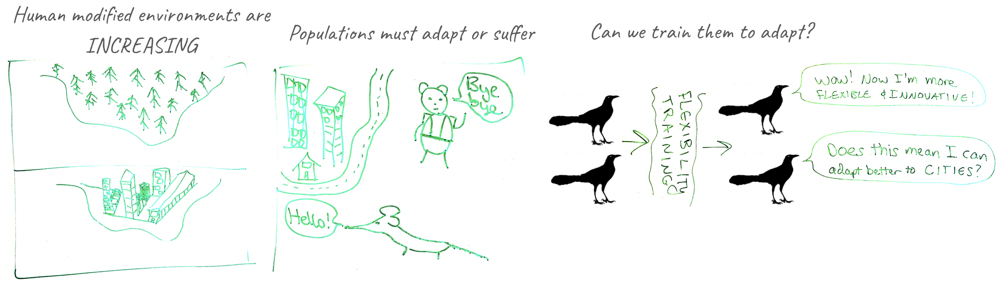
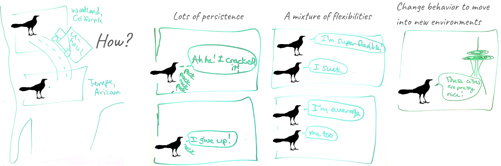

Corina Logan (she/her)
Group Leader
Department of Human Behavior, Ecology and Culture
Max Planck Institute for Evolutionary Anthropology
corina_logan [at] eva.mpg.de
Human modified environments are rapidly increasing and populations must either adjust to or suffer from these habitat changes. In my lab, we investigate how populations use behavior to adapt to environmental change. In particular, we focus on behavioral flexibility, the ability to adjust behavior to new circumstances, because it is thought to play an important role in acclimating to changing environments.
Does behavioral flexibility help individuals succeed in human modified environments?
The ManyIndividuals reproducible research program

We can manipulate grackle flexibility through serial reversal learning, which makes these individuals more flexible and more innovative in new contexts. I co-founded a global network of researchers with field sites to investigate whether we can manipulate flexibility in endangered and successful species and, if so, whether this helps them survive in human modified environments. Check out ManyIndividuals to learn about our open, verifiable, and replicable workflow that makes our research better and faster. [press release]
How are behaviorally flexible great-tailed grackles rapidly expanding their range?

Great-tailed grackles, a flexible bird species, have rapidly expanded their range into North America over the past 140 years. How were they able to do this so quickly? Grackles increased their habitat breadth between 1979 and 2019 by moving into more urban, arid environments. This could indicate that they are using behavior to adapt to new environments. We tested this and found that grackles in a recently established population on the edge of their range (Woodland, California) are more persistent and have a higher variance in flexibility compared with grackles in an older population away from the northern edge (Tempe, Arizona). Therefore, it appears that behavior is involved in facilitating this rapid range expansion.